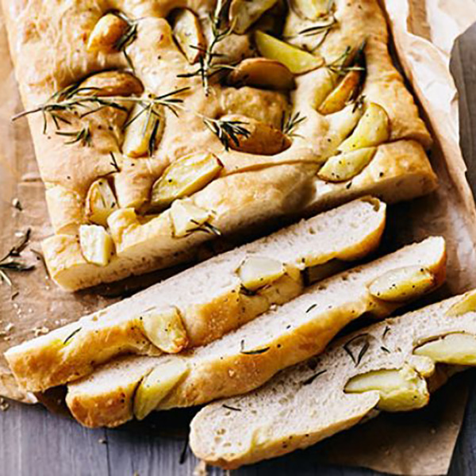

Choose a delicious Italian or Spanish recipe and have the right ingredients delivered at your door!
Are you don't feel confident when it comes to choose all the ingredients for the Valecian Paella? Do you wish to prepare the real Lasagna like you'd have in Italy? Delivericious selects only the best ingredients for your fantastic Spanish and Italian recipes and we deliver it right to you!

Valencian Paella Box!
Ingredients for 4 people:
- 400 gr. chicken
- 300 gr. rabbit meat
- 240 gr. green beans
- 160 gr. “garrofón” (Valencian white beans)
- 65 gr. well chopped tomato
- 100 ml. oil
- 800 ml. water
- 20 gr. salt
- 2 gr. paprika powder
- pinch of saffron
- 350 gr. Rice

Spanish Tortilla Box!
Ingredients for 4 people:
- 1 small onion
- 200 gr. Desiree potatoes
- 4 large eggs
- 1 teaspoon salt
- 1 tablespoon Spanish olive oil

Chicken Stew Box!
Ingredients for 4 people:
- 1 tablespoon olive oil
- 500 gr. skinless and boneless chicken thigh fillets, cut into bite-size pieces
- 1 onion
- 2 red peppers
- 1 garlic clove <1i>sweet smoked paprika
- 2 x 400 gr. tins chopped tomatoes
- 400 gr. chicken stock
- 50 gr. black pitted olives
- 1 bay leaf
- 410 tin cannellini beans, drained and rinsed
- fresh parsley Method: Heat oil in a large pan over high heat; fry chicken for 5min, turning occasionally until golden on all sides. Lift out on to a plate and set aside. Add onion and peppers to empty pan, lower heat and cook for 8-10min until softened. Add garlic and smoked paprika and fry for a min more, then stir in tomatoes, stock, olives, bay leaf and chicken. Bring to the boil; simmer for 45min-1hr until the chicken is tender. Stir in beans and parsley and check seasoning. Serve with rice or crusty bread or stirred into cooked pasta.

Tiramisù Box!
Ingredients for 4 people:
- 250 gr. mascarpone cheese
- 3 eggs, separated
- 15 lady fingers
- 200 ml espresso coffee, cooled
- 2 tablespoons sugar
- 2 tablespoons unsweetened cocoa powder
- 25 ml cognac or brandy Method: Add the sugar to the egg yolks. Beat well until the mixture is light and creamy. Add the mascarpone and half of the cognac or brandy, and beat well. With clean utensils, beat the egg whites until stiff. Fold the beaten egg whites into the mascarpone mixture. Pour espresso into a shallow dish along with the remaining cognac and 1 teaspoon of the cocoa powder. Stir well. Quickly dip each lady finger in the espresso mixture, working one at a time, and line the bottom of a glass dish, approximately 20cm round or square. Once the bottom of the dish is covered in an even layer of espresso-soaked lady fingers, top with 1/2 of the mascarpone mixture. Dust with 1/2 of the cocoa. Repeat with another lady finger layer, then finally the remaining mascarpone and a final dusting of cocoa powder. Chill in the fridge for about 4 hours, then serve!


Lasagne Box!
Ingredients for 6-8 people:
- For the pasta sheets:
- 400 grams Flour “0”
- 4 eggs
- For the Ragù:
- 1 small carrot
- 1 white onion
- 1 small stalk of celery
- 2 tablespoons Extra Virgin olive oil
- 500 gr. ground beef
- 350 gr. ground pork
- ½ glass of white wine
- salt
- ground pepper
- For the bechamel:
- 1 liter (1 quart) of milk
- 100 gr. of butter
- 80 gr. all-purpose flour
- a tiny pinch of nutmeg
- salt
- pepper
Contact us
You can also find us at Birkbeck University:
About
We are Andrea and Irene, students at Code First: Girls from Birkbeck University. We thought about sharing with you some of the most well-known Italian and Spanish recipes. You can buy all the ingredients you need for each recipe and have them delivered straight to your door, as we know you probably are very busy improving your coding skills!